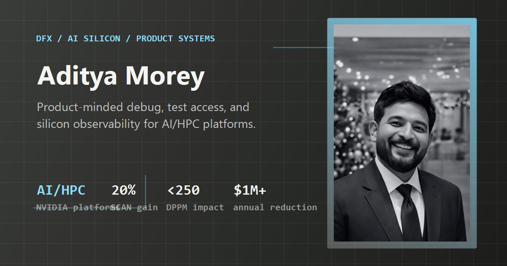

AI/HPC DFX Methodology
I architect test access, debug visibility, secure DFX, scan dump, RAM dump, array dump, and BIST infrastructure for next-generation AI and high-performance computing platforms.
I work on the parts of AI hardware that make failure observable: scan, JTAG/IJTAG, BIST, secure debug, post-silicon bringup, and the interface between physical execution and product-grade reliability.
01 / SIGNAL
I operate at the intersection of AI hardware, DFX, DFT, ATE, post-silicon validation, scan debug, and product-minded platform engineering.
At NVIDIA, I build methodology and debug infrastructure for AI/HPC platforms: IEEE 1149.1, IEEE 1500, IEEE 1687, JTAG/IJTAG, IO BIST, memory BIST, scan dump, RAM dump, DFD, and secure DFX flows that make world-class silicon easier to verify, bring up, debug, and productize.
My product angle is simple: internal hardware platforms still have users, workflows, adoption, reliability, and measurable business impact. I try to build infrastructure that disappears into the work: faster diagnosis, cleaner requirements, and fewer unknowns at scale.
02 / SYSTEMS
I architect test access, debug visibility, secure DFX, scan dump, RAM dump, array dump, and BIST infrastructure for next-generation AI and high-performance computing platforms.
I turn silicon state into actionable signal through structured debug flows, reproducible evidence, and the shortest path from failing behavior to root cause.
I delivered scan efficiency improvements, defect-rate impact, factory cost reduction, and production debug leverage across DFT/ATE workflows.
I treat internal tools as products: requirements, users, adoption, reliability, roadmap pressure, and measurable impact for the systems engineers who actually depend on them.
03 / INTERACTIVE LOGIC
04 / IDEAS & ARTIFACTS
I wrote this as a formal economic framework for translating engineering QoS (Quality of Service) constraints into measurable economic impact. The paper introduces the Locational Cost of Intelligence and an intelligence price deflator, providing a structured approach to valuing AI compute output beyond raw FLOPS. It connects hardware execution - specifically memory bandwidth and cache utilization - with macro-economic utility.
Link to SSRN Manuscript [External]I am developing this as a continual learning architecture for mitigating catastrophic forgetting in large language models. Standard fine-tuning paradigms degrade foundational weights. NeAd introduces a nested topological approach to parameter-efficient fine-tuning, allowing models to acquire novel domain specificities without destroying the base heuristic.
The core regularization objective ensures parameter stability across sequential task acquisition:
Full architecture documentation available upon technical review.
I am writing this as a long-form science fiction manuscript and a narrative stress-test for AI economic theories. Instead of standard genre tropes, the world-building is rooted in the commoditization of intelligence, examining how societies structure themselves around the M-Stack and locational compute constraints. It explores the long-horizon implications of the hardware infrastructure currently being built.
I keep a small archive of charcoal portraits and optical studies. The work is quieter than the engineering: contrast, light, edge detail, and manual control. Some of it comes from Hasselblad, Leica, and Sony A1 systems; some of it comes from paper, carbon, and time.

I co-founded and operated an educational initiative providing free access to students in rural India. I approached it as an infrastructure problem: navigating extreme resource constraints, defining user needs, and building a sustainable operating model in the physical world.
05 / TRAJECTORY
I work on DFX methodology, secure test access, silicon debug, pre-silicon verification, post-silicon bringup, and cross-functional debug infrastructure for AI/HPC platforms.
I worked across production test, scan debug, yield improvement, coverage analysis, defect-rate reduction, data-driven factory debug, and high-leverage automation across silicon products.
I built and operated an educational initiative for rural India through constraints that looked less like business school and more like field engineering.
06 / CONTACT